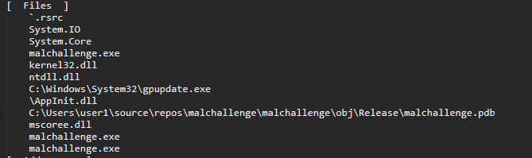

Basic .NET Malware Analysis
Preparation
Before I get into this I want to give a massive shoutout to Anthony Woodburn. He was our team lead and put in an insane amount of work to make sure we got everything we could out of the competition and the months of preparations.
We started prep for C3X two months before the competition. This gave us all the time necessary to not only learn new concepts but also prepare for the competition with a test environment
Before the competition we had made a script that covered the file enumeration process, that script is included in this repository. The first thing it did was check if the executable was packed, it would then to unpack it and continue analysis. The script only detects and unpacks UPX packed programs, as the competition was beginner friendly we assumed that the most obfuscated the program would be is packed with a well known packer like UPX. The program did not end up being packed.
Once that was done we ran strings against it, and wrote the ouput into a seperate file called 'strings_malchallenge.txt'. We then used some regular expression queries to go through all the strings and find ones that were thought could be important, namely files, file paths, URLs, and ip addresses, then stored those into a file called 'interest_malchallenge.txt'. This allowed us to find the flag for Flag 7, which was C:\Users\user1\source\repos\malchallenge\malchallenge\obj\Release\malchallenge.pdb. These strings allowed us to guess many of the flags (4 and 8), however; I want to explain the ways I found them afterwards that would be much more reliable than guessing.

Then we ran a program called exiftools, which finds the metadata of a file. We wrote the output of this into a file called 'exif_malchallenge.txt'. This gave us 2 different flags: flag 1, which was 01:12:2099 06:36:42; and flag 3, which was Version 4.6.1.
We then ran the program, it requires administrative privileges to run. Running the program allowed us to gain some information about the code structure (loops, control structures, order). This would impact the code analysis. When you attempt to close the program it will crash your machine, leaving a blue screen called a Blue Screen of Death (BSoD). This is the flag for Flag 2.

At this stage I opened the program into a debugger, I used x64dbg rather than the ideal program which was DNSpy, which prevented me from getting this flag until after the competition had ended. After shuffling through DNSpy, I found my way to the main function.

After running the program I knew that anything from the console class didn't have a large impact on the program other than the initial output. So I went through it in order. The function `ProcessProtection.Protect()` function contained a lot of function and classes that I was not familiar with so I skipped it. I moved on to `Widget.DatabaseInfo()`, this function included most of the information that pertained to the 'Help Menu' that comes up when the program executes properly. The function `Region()` is what actually encrypts the function. The array 'array' stores the encryption key of `416`. This is the answer for Flag 6.

After doing this I looked into the function after the 'Help Menu' was displayed, `DataStore.Populate`. This also included a lot of functions that I was not familiar with, however the variable 'lpApplicationName' was set to 'C:\Windows\System32\gpupdate.exe' and there were function calls called 'WriteProcessMemory', so I assumed that this was the function responsible for the process injection mentioned in questions. `C:\Windows\System32\gpupdate.exe` was the anser to Flag 5

Using the site that was given to us in the question, I compared the function calls to those referenced in the blog page. The functions `QueueUserAPC()`, `QueueUserAPC`, and `ResumeThread()` were mentioned in the section for APC Injection. This was the answer to flag 5.
Instead of using something like Ghidra, IDA, or Radare2 DNSpy or ILSpy can be used. ILSpy and DNSpy decompile executables that use the .NET framework into C# rather than assembly making it much easier to read and understand. DNSpy is the recommended program because it is a decompiler, therefore; the code can be changed to prevent lots of wasted time.
When the file is loaded into DNSpy click malchallenge \> malchallenge \> malchallenge, this is a codespace in the program. The sub-sections shown in this section are local classes. The `program` class is what the main function is stored in.
All functions from the *console* class deal with input and output to and from the console. So not relavent to this executable. This leaves two functions of interest `ProcessProtection.Protect()` and `Widget.Database()`.
The `ProcessProtection.Protect()` function is what causes the blue screen of death so it can be commented out and saved as a seperate file, allowing the file to be run without causing the VM to be rebooted.
This shows the code for the help menu that comes up. This shows the key, the type of cipher being used, and what is being encrypted.
The `ProcessProtection.Protect()` class is what causes the Blue Screen of Death when the program is run. By editing the main function (right click \> edit method) commenting out this function to allow the rest of the program to run cleanly and avoid the BSoD when the program is exited. This also allows the program to be run as a normal user rather than as an administrator.
The `Widget` class deals with everything that has to do with the "Help Menu" popup that appears when the program is executed properly. The help menu gets initiated by the `DatabaseInfo()` function which then calls `HelpMenu()` and `Datastore.Populate`.
The `HelpMenu()` function gets the current data in UTC, then calls `Region()`. Region deals with encrypting the data. The encryption algorithm used is an XOR cipher.
The `DataStore.Populate()` function is what executes the process injection. By using the webpage that describes the types of injections, searching for the functions that are used in the this function will help find what type of injection this program is using.
According to the question there is a file that is dropped onto the system when the program is executed. In the strings there is a large base64 encoded string, when this string is decoded the MZ signatures and the sections are all human readable. Implying that the base64 encoded data is the executable that is being dropped. Looking into the `malchallenge.Helpers` namespace, there is a class `GlobalVars` which contains the base64 string seen when running strings on the executable. Right-click and select analyze, this shows where the string was being used by selecting 'Read By'. Select the function `ConnectionString.RpcAllocationUnit()` and it will bring up the function's code. This shows that the function drops `AppInit.dll` into the current user's `%AppData%` folder. It will show up in `%AppData%/Roaming/`.